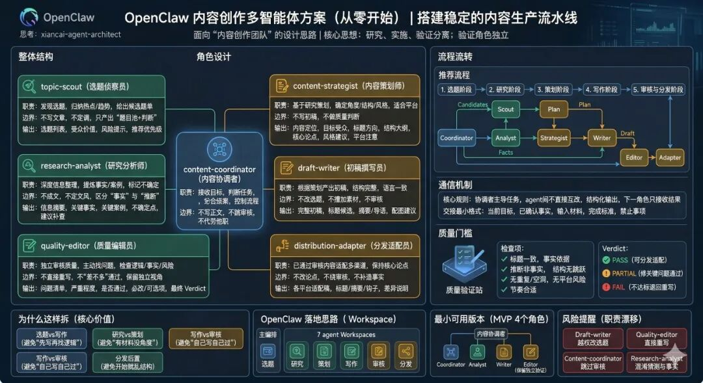
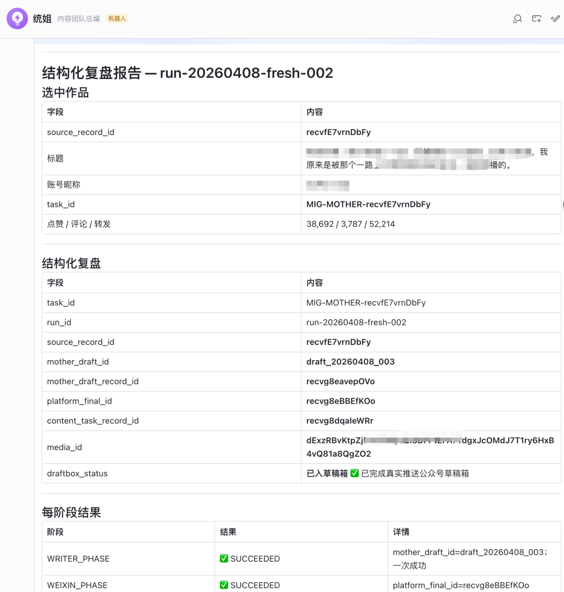
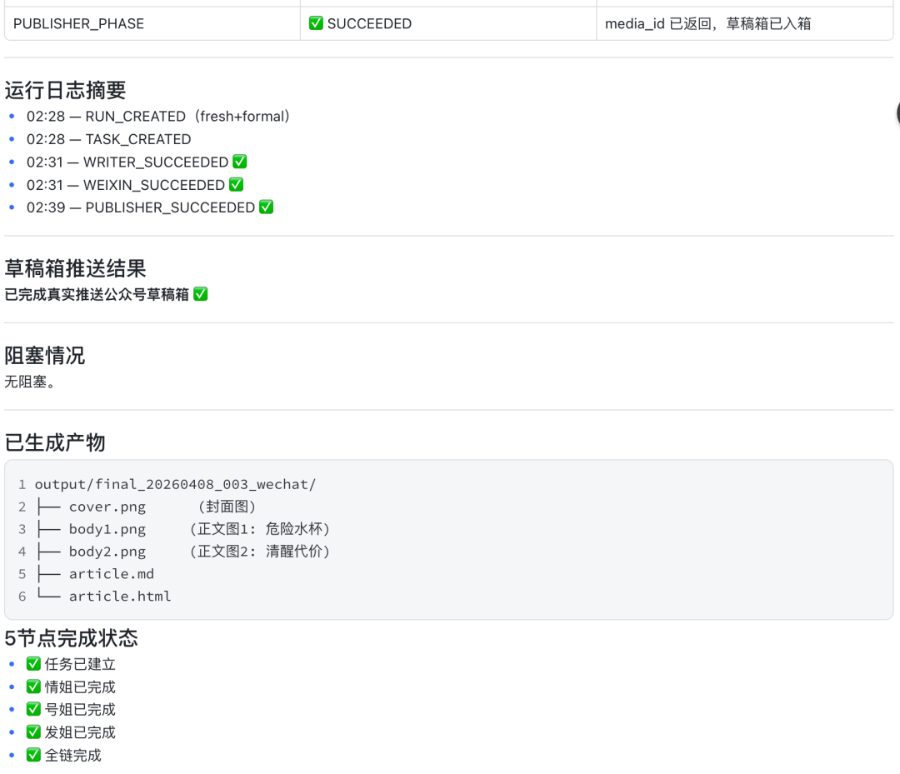

引言
你用Claude Code多久了？还在一个窗口里让它"顺便做做选题、顺便写写文章、顺便检查质量"？
说句扎心的——Claude Code根本没打算让你这么做。
我啃完它的源码（62个.md文件，27000+行）之后，发现它的设计哲学极其克制：每个Agent只做一件事，边界清晰得像法律条文。 但90%的人用错了，恨不得把整个团队塞进一个对话框。
于是我基于这次源码分析，做了一个Skill——xiancai-agent-architect。
它专门解决一件事：怎么从零设计一个多智能体协作方案，并且真正落地。
这个Skill能做什么
xiancai-agent-architect 的定位是面向Agent设计与多智能体治理。
具体来说，它帮你干4件事：
① 新增Agent
告诉你什么场景该加一个新角色，怎么定义它的职责边界，避免"角色膨胀最后乱成一锅粥"。
② 优化Prompt
不只是改措辞，而是从"这个Agent该负责什么、不该负责什么"出发，重新设计它的行为边界和输出格式。
③ 设计多智能体协作方案
给你一套可复用的角色划分模板，告诉你Coordinator怎么统筹、各角色怎么交接、交接的最小格式是什么。
④ 审核权限、隔离与安全边界
这是大部分方案里最容易被忽视的——我直接从源码里扒出了Claude Code的权限设计逻辑，教你怎么给每个角色设定"红线"。
方案截图展示
光说不练假把式。下面是我用 xiancai-agent-architect 设计的OpenClaw内容创作多智能体方案（从零开始，搭建稳定的内容生产流水线）：

配图：实测方案截图
描述：OpenClaw 内容创作多智能体方案架构图，包含内容协调者(Content Coordinator)、选题侦察员(Topic Scout)、研究分析师(Research Analyst)、内容策划师(Content Strategist)、初稿撰写员(Draft Writer)、质量编辑员(Quality Editor)、分发适配员(Distribution Adapter)等多个角色的职责定义、边界说明和流程流转图。
运行效果实测


这个方案的核心设计思想就一句话：研究、实施、验证分离，验证角色必须独立。
具体怎么拆？我直接上架构图里的角色定义：
选题侦察员（Topic Scout）
只管一件事：发现选题，给出候选题单。不写文章，不定调，只输出"题目池+判断"。
研究分析师（Research Analyst）
只管一件事：深度整理信息，提炼事实和案例，标记不确定性。区分"这是事实"和"这是我的推断"。
内容策划师（Content Strategist）
只管一件事：基于研究，确定角度/结构/风格/平台适配策略。不写初稿，不做质量判断。
初稿撰写员（Draft Writer）
只管一件事：根据策划输出完整初稿。不改选题，不擅加素材，不参与审核。
质量编辑员（Quality Editor）
只管一件事：独立审核，主动找问题。不能直接重写，不能"差不多通过"，必须保留独立视角。
分发适配员（Distribution Adapter）
只管一件事：让已通过审核的内容适配不同平台。不改论点，不重复审核，不补造事实。
整个流程的通信规则也很简单：Coordinator主导任务，Agent之间不直接互改，下一角色只接收结果。 交接的最小格式必须包含：当前目标、已确认事实、输入材料、完成标准、禁止事项。
源码给我的3个核心启示
啃完源码文件之后，我总结了3个从源码里才能看到的东西：
启示一：权限控制比你想象的更重要
Claude Code的源码里，权限验证不是"可选项"，是写死在架构里的第一公民。每个工具能不能调用、哪个Agent能访问哪个文件，全都是白名单机制。
很多人在设计多Agent方案时，习惯先跑通再说，权限后补。但源码告诉我：等出了问题再加权限，代价是指数级的。 正确的做法是先把"禁止事项"写清楚，再让Agent去跑。
xiancai-agent-architect 里的权限审核模块，就是把这个逻辑产品化了。
启示二：Hook机制让架构可观测
Claude Code里大量使用了Hook——在关键节点插入观察点，记录状态、捕获异常。这个设计让整个系统是可调试的，而不是黑盒闷头跑。
我在设计多Agent方案时，也借鉴了这套思路：每个角色交接点都是一个Hook，输出标准化日志，方便排查"哪一步出了问题"。
启示三：探索与执行必须分离
这是源码里最反直觉的一点：Claude Code把"探索模式"和"执行模式"严格分开。
探索模式：大胆尝试，允许失败，快速迭代。
执行模式：严格按照确认的路径走，不允许发散。
很多团队做内容生产时，调研阶段和写作阶段混在一起——调研着调研着开始写，写着写着又回头补调研，结果效率低下、质量飘忽。源码告诉我，这是不允许的。 探索就是探索，执行就是执行，中间必须有关卡（Quality Gate）。
结尾
Claude Code的源码里，有一句话反复出现：
"Build agents that know what they are not supposed to do."
翻译过来就是：好Agent，不是知道自己能做什么，而是知道自己不该做什么。
xiancai-agent-architect 就是把这种设计思路，沉淀成了一个可操作的Skill。帮你从"一个窗口干所有事"，升级到"多Agent各司其职、边界清晰、协作高效"。
技能有需要的可以留言"Agent架构"四个字获取
我是闲菜哥，专注AI工具深度使用与生产提效。
看到这里了，顺手点个赞、在看、转发一下，我们下篇文章见。
本文由闲菜哥原创，未经授权禁止搬运。关注公众号，获取更多AI生产力的硬核内容。
💡 闲菜哥的结语：
如果这篇内容对你有启发，欢迎 点赞 + 在看 告诉我们。你的每一次互动，都是我们死磕硬核内容的动力。
别忘了 星标🌟 我们，带你第一时间看穿 AI 赛道的底层密码！
#Claude Code #多Agent协作 #AI工具使用 #Skill开发 #Agent架构设计